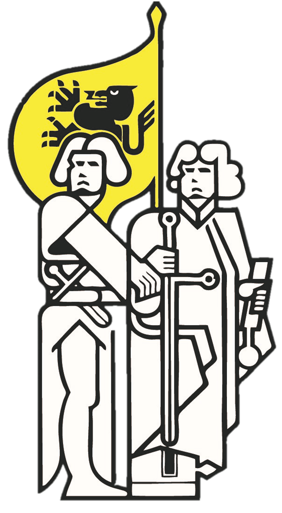

Ledenmagazine
WandelNieuws
Ons clubblad voor leden — klik op een cover om het magazine te openen als PDF.



25 jaar wandelplezier in het hart van Brugge. Vier unieke wandeltochten, een hechte gemeenschap en de mooiste routes door de Vlaamse regio.
Een gevarieerde tocht door oud-Zeebrugge, langs de marina, de zeedijk, de vismijn en het natuurdomein. Met een lus richting Heist voor de langere afstanden.
Deze haventocht werd gelanceerd in 2007 ter ere van het eeuwfeest van de Zeebrugse haven. Het industriële en maritieme landschap zorgt voor een uniek wandeldecor dat je nergens anders vindt — ideaal voor gezinnen, vrienden en wandelaars van alle leeftijden.
Onze naamgevende tocht, ter herdenking van de historische Brugse Metten van 1302 — de nacht van 18 mei, waarop de Vlaamse burgers van Brugge de Franse bezetting verjoegen. Een wandeling met historische diepgang in een unieke omgeving.
Volledig nieuw parcours door Koolkerke en Sint-Kruis, langs het Fort van Beieren en de Damse Vaart. Extra lus van 5 km in Koolkerke.
Geniet achteraf van een streekbiertje Viven.
Een vernieuwde wandeltocht in het groene hinterland van Brugge, langs het domein Koude Keuken. De route biedt een rustige doortocht zowel binnen als buiten de stadswallen — een mooie combinatie van natuur en stedelijke erfgoedplekken.
Ter ere van de Vlaamse volkshelden Jan Breydel en Pieter de Coninck, die op 11 juli 1302 de Franse ridders versloegen bij de Guldensporenslag. Georganiseerd op de Vlaamse feestdag als hommage aan de Vlaamse identiteit en vrijheidsgeest.
Een heerlijke wandeling langs het tracé van de oude spoorwegbedding, door het rustige en prachtige natuurgebied "de Assebroekse Meersen", met uitlopers in en rond het domein Ryckevelde.
De oudste tocht in ons aanbod — een traditie die teruggaat tot 1982, toen ze werd georganiseerd door "De Roas Stappers" uit Assebroek. In 2008 nam de Brugse Metten Wandelclub de fakkel over en blaast de tocht elk jaar nieuw leven in.
De Brugse Metten Wandelclub vindt haar roots in 1977, toen de stad Brugge de allereerste Brugse Mettentocht organiseerde als onderdeel van de 11 juli-vieringen. Ongeveer 100 deelnemers trokken dat eerste jaar de straat op.
Na 24 edities liep de tocht in 2000 ten einde. Maar in 2002 nam een enthousiaste groep wandelaars — grotendeels leden van de Internationale Guldensporenmars — het heft in handen en richtte officieel de Brugse Metten Wandelclub op.
De eerste tocht vond plaats op 18 mei 2002 — precies 700 jaar na de historische Brugse Metten van 1302. Sindsdien groeide de club uit tot een hechte gemeenschap met vier jaarlijkse tochten en honderden trouwe leden.
Op 9 juni 2016 verwierf de club officieel de vzw-status, onder ondernemingsnummer 0656 525 593.
Word ook lid →Georganiseerd door het 11 Juli Comité van Brugge. Circa 100 deelnemers namen deel aan de allereerste editie.
Denis Vermeire wordt eerste voorzitter. Aansluiting bij de Vlaamse wandel- en joggingliga, lidnummer 429.
De tweede wandeltocht wordt aan het programma toegevoegd.
Gelanceerd ter ere van het eeuwfeest van de Zeebrugse haven. Joël Boussemaere wordt voorzitter.
Overname van "De Roas Stappers" uit Assebroek, inclusief de Arsebrouctocht — die al sinds 1982 bestaat.
Erkend als vzw op 9 juni 2016. Ondernemingsnummer 0656 525 593.
Geen verplichtingen — leden zijn vrij om te wandelen waar en wanneer ze willen. Geldig tot en met december 2026.
Ons clubblad voor leden — klik op een cover om het magazine te openen als PDF.
Vragen over lidmaatschap, tochten of de club? Aarzel niet om contact op te nemen.
Brugse Metten Wandelclub vzw
Ondernemingsnummer 0656 525 593
Wandelsport Vlaanderen · wandel.be
Lidnummer 429
Trots aangesloten bij Wandelsport Vlaanderen en wandel.be · Lidnummer 429 · vzw-ondernemingsnummer 0656 525 593